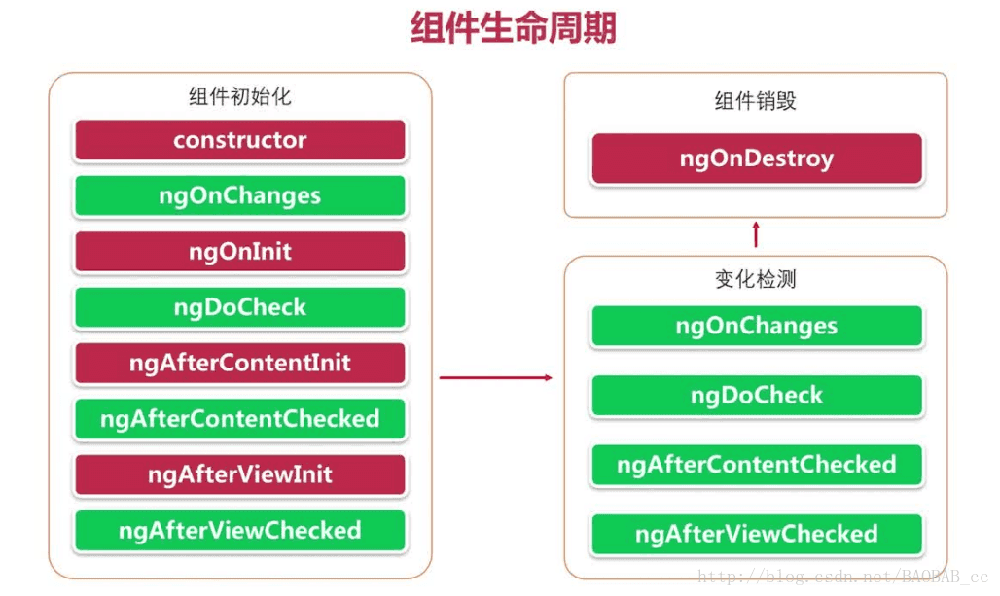

Angular 组件生命周期钩子

其中红色代表只执行一次（初始化类型的钩子），绿色代表执行多次（检测类型钩子）
生命周期的顺序
当你的应用通过调用构造函数来实例化一个组件或指令时，Angular 就会调用那个在该实例生命周期的适当位置实现了的那些钩子方法。
Angular 会按以下顺序执行钩子方法。你可以用它来执行以下类型的操作。
| 钩子方法 | 用途 | 时机 |
|---|---|---|
ngOnChanges() |
当 Angular 设置或重新设置数据绑定的输入属性时响应。 该方法接受当前和上一属性值的 SimpleChanges 对象注意，这发生的非常频繁，所以你在这里执行的任何操作都会显著影响性能。 欲知详情，参见本文档的ngOnchanges |
在 ngOnInit() 之前以及所绑定的一个或多个输入属性的值发生变化时都会调用。 |
ngOnInit() |
在 Angular 第一次显示数据绑定和设置指令/组件的输入属性之后，初始化指令/组件。 欲知详情，参见本文档中的初始化组件或指令。 | 在第一轮 ngOnChanges() 完成之后调用，只调用一次。 |
ngDoCheck() |
检测，并在发生 Angular 无法或不愿意自己检测的变化时作出反应。 欲知详情和范例，参见本文档中的自定义变更检测。 | 紧跟在每次执行变更检测时的 ngOnChanges() 和 首次执行变更检测时的 ngOnInit() 后调用。 |
ngAfterContentInit() |
当 Angular 把外部内容投影进组件视图或指令所在的视图之后调用。欲知详情和范例，参见本文档中的响应内容中的变更。 | 第一次 ngDoCheck() 之后调用，只调用一次。 |
ngAfterContentChecked() |
每当 Angular 检查完被投影到组件或指令中的内容之后调用。欲知详情和范例，参见本文档中的响应被投影内容的变更。 | ngAfterContentInit() 和每次 ngDoCheck() 之后调用 |
ngAfterViewInit() |
当 Angular 初始化完组件视图及其子视图或包含该指令的视图之后调用。欲知详情和范例，参见本文档中的响应视图变更。 | 第一次 ngAfterContentChecked() 之后调用，只调用一次。 |
ngAfterViewChecked() |
每当 Angular 做完组件视图和子视图或包含该指令的视图的变更检测之后调用。 | ngAfterViewInit() 和每次 ngAfterContentChecked() 之后调用。 |
ngOnDestroy() |
每当 Angular 每次销毁指令/组件之前调用并清扫。 在这儿反订阅可观察对象和分离事件处理器，以防内存泄漏。 欲知详情，参见本文档中的在实例销毁时进行清理。 | 在 Angular 销毁指令或组件之前立即调用。 |
ngOnChanges
一旦检测到该组件或指令的**输入属性**发生了变化，Angular 就会调用它的 ngOnChanges() 方法。 这个 onChanges 范例通过监控 OnChanges() 钩子演示了这一点。
1 | ngOnChanges(changes: SimpleChanges) { |
ngOnChanges() 方法获取了一个对象，它把每个发生变化的属性名都映射到了一个SimpleChange对象， 该对象中有属性的当前值和前一个值。这个钩子会在这些发生了变化的属性上进行迭代，并记录它们。
这个例子中的 OnChangesComponent 组件有两个输入属性：hero 和 power。
src/app/on-changes.component.ts:
1 | () hero: Hero; |
宿主 OnChangesParentComponent 绑定了它们，就像这样：
src/app/on-changes-parent.component.html:
1 | <on-changes [hero]="hero" [power]="power"></on-changes> |

但请注意：
ngOnChanges()方法不会捕获对hero.name更改。这是因为只有当输入属性的值发生变化时，Angular 才会调用该钩子。在这种情况下，hero是输入属性，hero属性的值是对 hero 对象的引用 。当它自己的name属性的值发生变化时，对象引用并没有改变